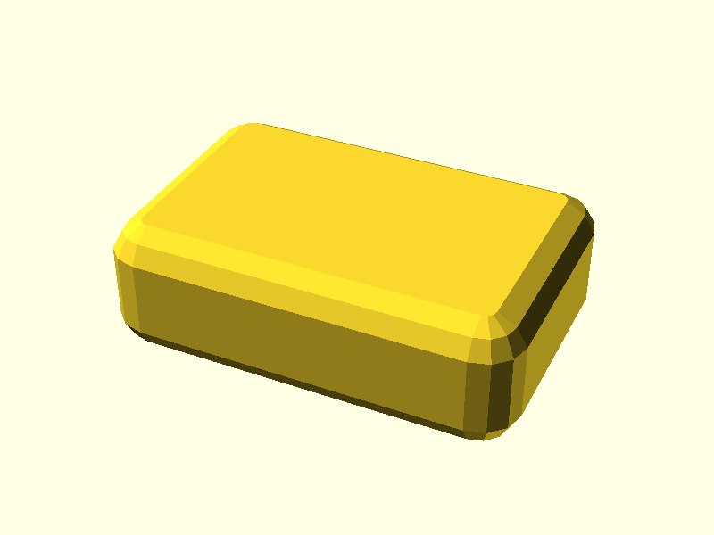

OpenSCAD → BOSL2

PythonSCAD → pybosl2

The summary follows the same dependency order as run-tests.sh.
XFAIL means the compatibility boundary is actively tested and currently
expected to fail for one specific documented reason.
| Status | Test | Meaning |
|---|---|---|
| 1. Toolchain / environment | ||
| PASS | Toolchain information | Toolchain metadata is available. |
| PASS | Public commands | OpenSCAD, PythonSCAD, Python and Git are exposed. |
| PASS | Environment library paths | BOSL2 and Python package paths are present. |
| PASS | Git functional smoke test | Git can initialize and create a commit. |
| 2. Base functionality | ||
| PASS | OpenSCAD PNG/STL | Basic OpenSCAD render and export work. |
| PASS | PythonSCAD PNG/STL | Basic PythonSCAD render and export work. |
| 3. Additional runtime tests | ||
| PASS | PythonSCAD -D define injection | Command-line parameter injection works. |
| PASS | PythonSCAD embedded sys.path probe | Embedded Python runtime path inspection works. |
| 4. Library / interoperability | ||
| PASS | OpenSCAD → BOSL2 | Native OpenSCAD/BOSL2 route works. |
| PASS | PythonSCAD → pybosl2 | Python-native BOSL2 comparison route works. |
| XFAIL | PythonSCAD → BOSL2 .scad via osuse() | Known OpenSCAD version/runtime compatibility mismatch. |
| XFAIL | PythonSCAD → OpenSCAD object() | OpenSCAD object values do not currently cross as usable Python-side objects. |
A documented XFAIL is not ignored. A different failure or an unexpected success makes the verification suite fail so the compatibility assessment must be reviewed.
| Test suite | latest |
|---|---|
| Toolchain image | ghcr.io/brainboxemb/scad-toolchain:edge |
| OpenSCAD | OpenSCAD version 2026.09.03.nightly |
| PythonSCAD | PythonSCAD version 1.1.2 |
| Python | Python 3.12.3 |
| Git | git version 2.43.0 |
| BOSL2 | v2.0.752 |
| pybosl2 | 0.6.7 |
The suite also verifies PythonSCAD command-line define injection and records
the embedded Python sys.path. These are runtime diagnostics
rather than geometry comparisons.
These two supported routes intentionally render the same small rounded cuboid.

BOSL2 std.scad relies on OpenSCAD's date-based
version_num() compatibility gate. PythonSCAD exposes its own
semantic-version value through the SCAD compatibility runtime, so BOSL2
rejects the runtime before the test geometry is created.
OpenSCAD experimental object() values currently do not cross
the PythonSCAD/OpenSCAD boundary as usable Python-side objects. This blocks
the object-based library architecture tested here even though conventional
module/function interoperability can work.
Together these findings show that PythonSCAD can consume useful conventional OpenSCAD code, but advanced OpenSCAD libraries can depend on runtime and value semantics that PythonSCAD does not reproduce identically.